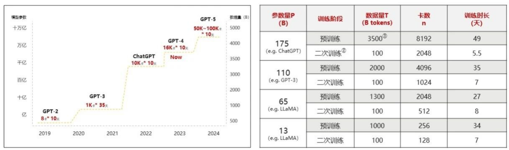

海量数据
正在读取本章记录下次复习：—
请通过“启动学习站.cmd”进入，才能写入数据库。
神经网络算法是AI的大脑，是决定AI是否”聪明”的基础。然而，再聪明的人，如果不学习任何知识，也不会产生智慧。
AI也是一样，要想让AI产生智慧，就必须用海量的数据来训练它。上个世纪，互联网不够发达，可以用来训练的数据也比较少。
到了现代，互联网、移动互联网蓬勃发展，各种数据呈井喷式呈现。AI可以学习整个互联网的精华：所有的维基百科、无数的新闻文章、海量的书籍、庞大的代码库……这个数据量是以万亿级的词汇来计算的。而这，就给AI的训练提供了庞大的数据基础。
如图，随着AI大模型规模扩大，其训练所需的时长和数据量也呈指数级增长：
